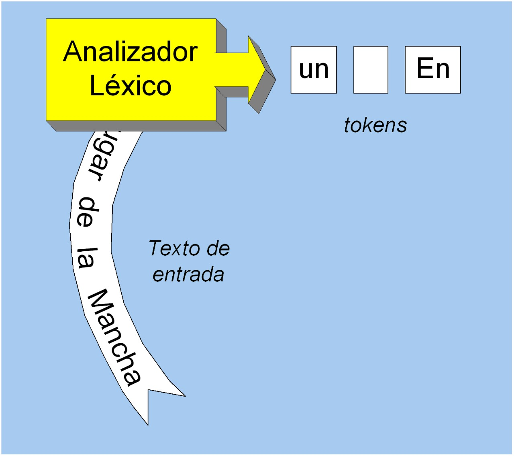

Un lenguaje de programación es un lenguaje formal, es decir, un lenguaje con reglas gramaticales bien definidas, que le proporciona a un programador, la capacidad de programar una serie de instrucciones o secuencias de órdenes en forma de algoritmo con el fin de controlar el comportamiento físico o lógico de un sistema informático, de manera que se puedan obtener diversas clases de datos o ejecutar determinadas tareas. Diferencia entre un lenguaje compilado e interpretado:
Un compilador es un programa que traduce código fuente escrito en un lenguaje de alto nivel como Java, a un lenguaje legible por la máquina llamado código objeto, lenguaje de destino o incluso lenguaje ensamblador, además, informa de errores al leer el código.
Los componentes de un compilador son:
Es la primera fase de un compilador, aquí se lee una secuencia de caracteres de izquierda a derecha del programa fuente, reconocer subcadenas que correspondan a símbolos del lenguaje y retornar los tokens correspondientes y sus atributos. 